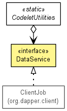

JavaScript is disabled on your browser.
Overview
Package
Class
Use
Tree
Deprecated
Index
Help
Prev Class
Next Class
Frames
No Frames
All Classes
Summary:
Nested |
Field |
Constr |
Method
Detail:
Field |
Constr |
Method
org.dapper.codelet
Interface DataService

All Known Implementing Classes:
ClientJob
public interface
DataService
Defines a service for retrieving data.
Method Summary
Methods
Modifier and Type
Method and Description
byte[]
getData
(
String
pathname)
Retrieves data located by some pathname.
Method Detail
getData
byte[] getData(
String
pathname)
Retrieves data located by some pathname.
Overview
Package
Class
Use
Tree
Deprecated
Index
Help
Prev Class
Next Class
Frames
No Frames
All Classes
Summary:
Nested |
Field |
Constr |
Method
Detail:
Field |
Constr |
Method